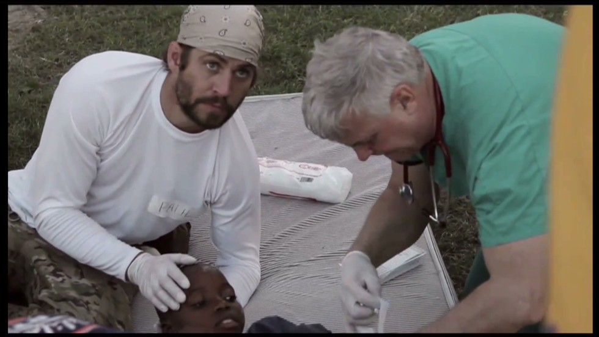

Tribute to Paul Walker
Man whose legacy began behind the wheels

Paul walker during a humanitarian charity event.
Few thigs about Paul
1973 - Walker was born in Glendale, California, and was the son of Cheryl (née Crabtree),
a fashion model, and Paul William Walker III, a sewer contractor and boxer who was a two-time Golden
Gloves champion.
2001 - The year where it all started - In 2001, Walker's breakthrough role arrived when
he starred opposite actor Vin Diesel in the successful action film The Fast and the Furious, the
first film in the franchise.
Career - Walker began his small screen career as a toddler, when he starred in a television
commercial for Pampers. He began modeling at the age of two and began working on television shows
in 1985, with roles in shows such as Highway to Heaven, Who's the Boss?, The Young and the Restless,
and Touched by an Angel.
Personal Life - Walker held an interest in marine biology; he joined the board of directors
of The Billfish Foundation in 2006.[30] He fulfilled a lifelong dream by starring in a National Geographic
Channel series Expedition Great White (later retitled Shark Men), which premiered in June 2010
Charity - In March 2010, Walker went to Constitución, Chile, to offer his help and support
to the people injured in the 8.8 magnitude earthquake that struck on February 27.
Awards - Paul has won 7 awards and was nominated 11 times for various awards. With one Soap
Opera Diges, 3 MTV awards and many more both in cineams and TV shows.
Other Interests - His fighting scenes in movies lead to a passion for martial arts. He has
studied various forms of Jujitsu, Taekwondo, Jeet Kune Do and Eskrima.
"You know, all that really matters is that the people you love are happy and healthy. Everything else is just sprinkles on the sundae."
Look at Paul's more personal life on his
Wiki page.